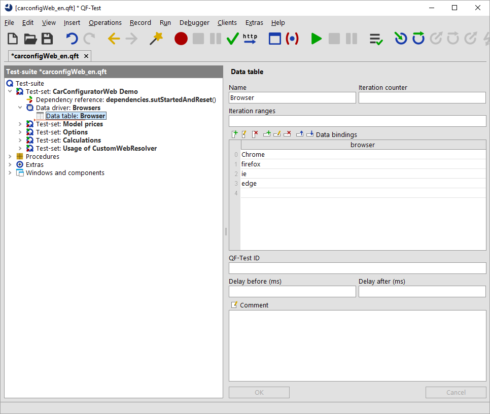

| Version 6.0.3 |
QF-Test allows intuitive testing of web pages in a browser from the point of view of the user. Just as with the other supported GUI technologies you can record actions and checks directly, and then rework, structure and replay them.
QF-Test supports test automation for the following browsers:
Please refer to subsection 1.1.2 for details on the supported browser versions.
In the tutorial, part II, you will find a step-by-step instruction for starting with test automation for web applications.
 You can also take a look at the Video tutorials. If
you just want to set up the startup sequence for the web application we recommend the video 'Quickstart Wizard' on our QF-Test YouTube Channel.
You can also take a look at the Video tutorials. If
you just want to set up the startup sequence for the web application we recommend the video 'Quickstart Wizard' on our QF-Test YouTube Channel.
The approach towards test automation and execution regarding web applications does not really differ from that for other GUI technologies, as described in the general part of the manual, starting from chapter 2. However, you should pay special attention to component recognition, which highly depends on the precise implementation of the web application. In order to find out how well the direct recognition will work we recommend you do a test recording of different components in several dialogs of the web application and check the replay is correct. Please refer to section 13.4 for more information on component recognition and configuration.
First, you need to start and connect to the desired browser via QF-Test. As soon as the web application, defined by its URL, has been loaded you can start with recording and test automation.
QF-Test uses three different methods, so-called drivers, to get access to the browser and to set up the connection: the QF-Driver, CDP-Driver and the WebDriver.
NoteFor some browsers QF-Test supports more than one connection mode. QF-Test tries to set the best mode for accessing the browser automatically. However, it is possible to take control over the connection mode via the attribute 'Browser connection mode' of the 'Start web engine' node. For details please refer to section 47.3.
QF-Driver embeds the browser installed on the testing machine into a wrapper window, and the wrapper window into the locally installed web browser, thus gaining access to the automation interfaces of the browser and being able to listen to the events in the browser and on the other hand to inject events into the browser.
The embedding of the browser into a separate window unfortunately does not work with all browsers anymore, requiring an alternative mechanism to be implemented.
5.3+ The CDP-Driver mechanism brings into play debugging interface integrated in Chromium (and browsers based on it). QF-Test uses for it Chrome DevTools Protocol. It is the same API that is used by browser development tools. The API provides close communication with a browser and efficient test execution. Unfortunately, an implementation of this interface exists so far not for all the browsers supported by QF-Test.
4.1+ The WebDriver mechanism uses the Selenium WebDriver as link between the browser and QF-Test, the WebDriver having become a W3C standard for controlling of web browsers (http://www.w3.org/TR/webdriver/).
Note For reasons inherent to WebDriver, unfortunately, the WebDriver connection mode is not yet on par with QF-Driver mode in terms of performance and feature completeness (see subsection 47.3.4). For the time being we recommend to primarily use QF-Driver or CDP-Driver mode for recording.
Note QF-Test needs to deep inspect the browser content in order to enable the familiar testing features (e.g. event and check recording, feature based component recognition, web and custom resolvers) in WebDriver mode. With some browsers this might trigger in a warning related to mixed content display or an untrusted certificate. If this warning or error message only appears while running the web site in testing mode, you can safely ignore it.
With web applications developers are quite free as to how to implement graphical objects with HTML, leading to a multitude of different implementations for functional GUI components like buttons, text fields, data tables etc. Some samples for an OK Button:
<button id="ok1">OK</button>
<div class="toolkit-btn">OK</div>
<span class="btn" name="ok2">OK</span>
<div role="button">OK</div>
By default, QF-Test records the GUI elements with the HTML tag as class plus basic features for recognition.
For the first sample QF-Test would record a component of the class BUTTON,
the name ok1 and the structure and geometry as resulting from the
GUI. When replaying the tests, the component recognition should work all right.
Moreover, QF-Test checks whether the HTML implementation is a quasi-standard, and if so,
maps the object to a generic QF-Test class. In the first sample this would be the case
and the component would be recorded as Button.
One benefit of generic classes is that QF-Test additionally records class specific features for component recognition, e.g. the text of a button would be saved in the 'Feature' attribute. Another advantage are the class specific checks, like a check for a whole row or column with tables. For more benefits of generic classes please read the introduction of Generic classes. For detailed information on class specific features please have a look at Properties of generic classes.
There is a variety of web frameworks on the market, such as Angular, React and Vue.js, which are very helpful when creating web pages. Each of the frameworks has its own implementation of GUI objects.
The second sample could be from a framework using the css class toolkit-btn
for buttons.
For some web frameworks the mapping of the GUI elements to generic classes has already been implemented with QF-Test. For such frameworks you can work with the stable component recognition you are used to with QF-Test. For more information please refer to Special support for various web frameworks. By default, QF-Test should automatically recognize the web framework used to implement the application. Else you can choose the correct framework manually.
The third and the fourth sample do not follow any standard. For sample three the
standard component recognition would probably be sufficient regarding stability
because of the name attribute. The fourth sample would not
have a good standard component recognition. However, it has an HTML attribute defining
the functionality of the node. In both cases you could map the defining attribute
to the generic class Button. For detailed instructions please refer to
Improving component recognition with a CustomWebResolver.
Note We recommend checking which category the GUI objects of the application to be tested belong to before starting test automation. In case standard recognition should not be sufficient we recommend to improve it by mapping the GUI objects to generic QF-Test classes as described in section 47.1.
For general information on QF-Test components refer to chapter 5.
Note Working with several browser windows is explained in FAQ 25.
Cross browser tests are easy to implement. You can implement test cases working on
one browser and then replay them on other browsers. You just need to
implement a Data driver defining adequately the variable $(browser).
If you want to try it out just open the web demo test-suite and add a 'Data driver' node in the
test-set ":
(To open the demo test-suite select the menu item »Help«-»Explore sample test-suites...« and click the
'open' link behind 'Web CarConfig Suite'.)
|
|  | ||
|
| Figure 13.1: Cross-Browser Tests | ||
Then the four test sets which are in the same test set as the data driver will be run once for each of the browsers.
4.2.1+ An important aspect of web page testing is the user experience on mobile devices like smartphones or tablets, since due to varying browser identifiers ("user agent") and device-specific screen sizes rendering of web pages differs between mobile and desktop browsers ("responsive design").
QF-Test supports such scenarios by emulating mobile browsers: A desktop browser (e.g. Google Chrome) is started in a special mode, where the page size and the browser identifier mimics those of browsers on mobile devices.
Google Chrome in particular is able to simulate specific characteristics of mobile browsers like adjusted pixel ratios and automatic scaling of non-responsive web pages.
To use mobile emulation in QF-Test, select the corresponding entry in the Quickstart wizard (see chapter 3) and specify the required device parameters, together with the URL of the web page and additional test requirements. QF-Test ships with a great number of predefined definitions of well-known mobile devices, which can be freely adapted as needed.
For a demo please open the test-suite 'carconfigWeb_advanced_en.qft' and run the test-set 'Emulation of Mobile Devices'. An easy way to open it is via the menu »Help«-»Explore sample test-suites...« and then selecting the 'open' link behind 'Web CarConfig Suite' (at the very bottom).
4.2+ Using the CDP-Driver and WebDriver connection mode it is possible to run Firefox, Chrome and Microsoft Edge in a so called "headless" mode. In this mode, the browser is started in the background, without any visible window on the screen. All interactions with the web page are executed inside this "invisible" window.
A use-case for headless browsers might be load testing (section 29.5). Or you could use it for tests you want to run in the background on the same machine as you are developing tests on.
To execute an existing web test using the "headless"-mode, simply change the type of browser in
the 'Start web engine' step from chrome to headless-chrome,
from firefox to headless-firefox, or from edge to
headless-edge.
You can run existing Selenium Scripts with QF-Test when using the WebDriver mode.
One way is the direct use of the WebDriver Java APIs in the 'SUT script' node (cf. section 50.12).
Another option is embedding Selenium Scripts as Unit tests, as described in chapter 12. As a nice side effect, you get an integrated report including the executed Unit tests.
For a demo please open the test-suite 'carconfigWeb_advanced_en.qft' and run the test-set 'Integrating Selenium tests'. An easy way to open it is via the menu »Help«-»Explore sample test-suites...« and then selecting the 'open' link behind 'Web CarConfig Suite' (at the very bottom).
If you use the CDP-Driver or WebDriver mode, you are no longer limited to Firefox if you want to specify a browser installation folder using the attribute 'Directory of browser installation' of the 'Start web engine' node. If no matching browser can be localized in the specified directory, an exception will be thrown. If no directory is specified, QF-Test will try to start a default browser of the given browser type.
| Last update: 9/6/2022 Copyright © 1999-2022 Quality First Software GmbH |